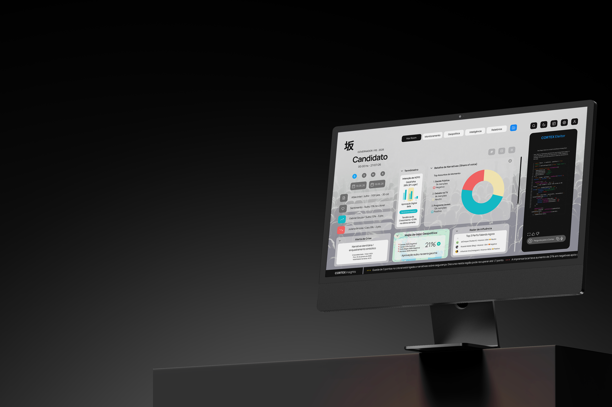
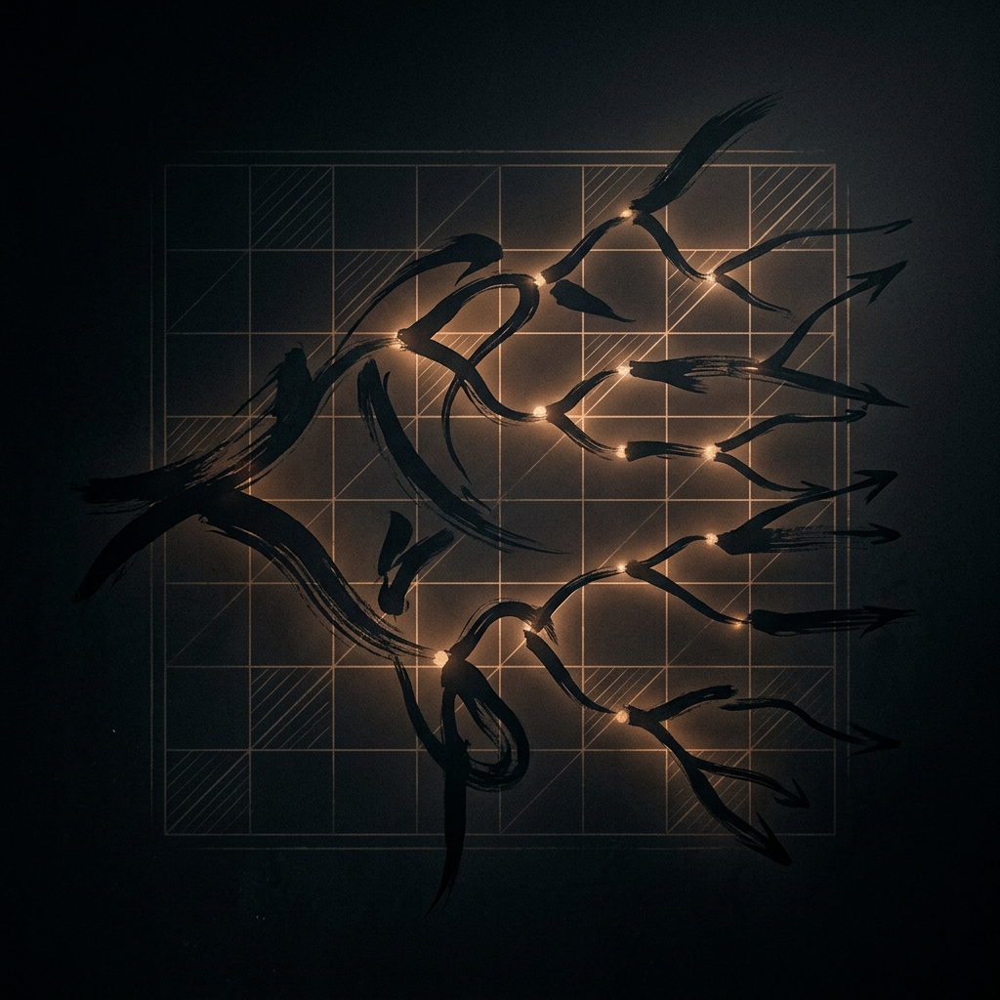
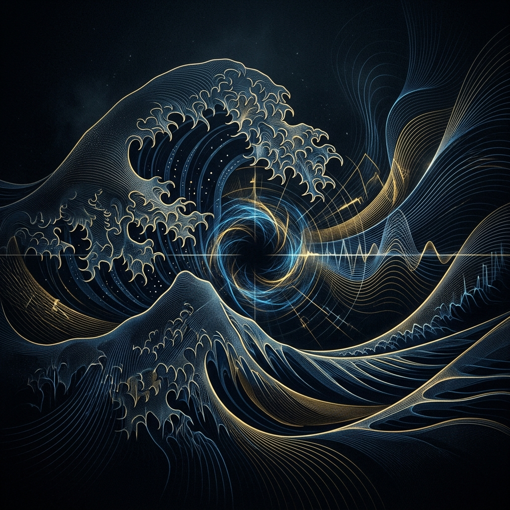
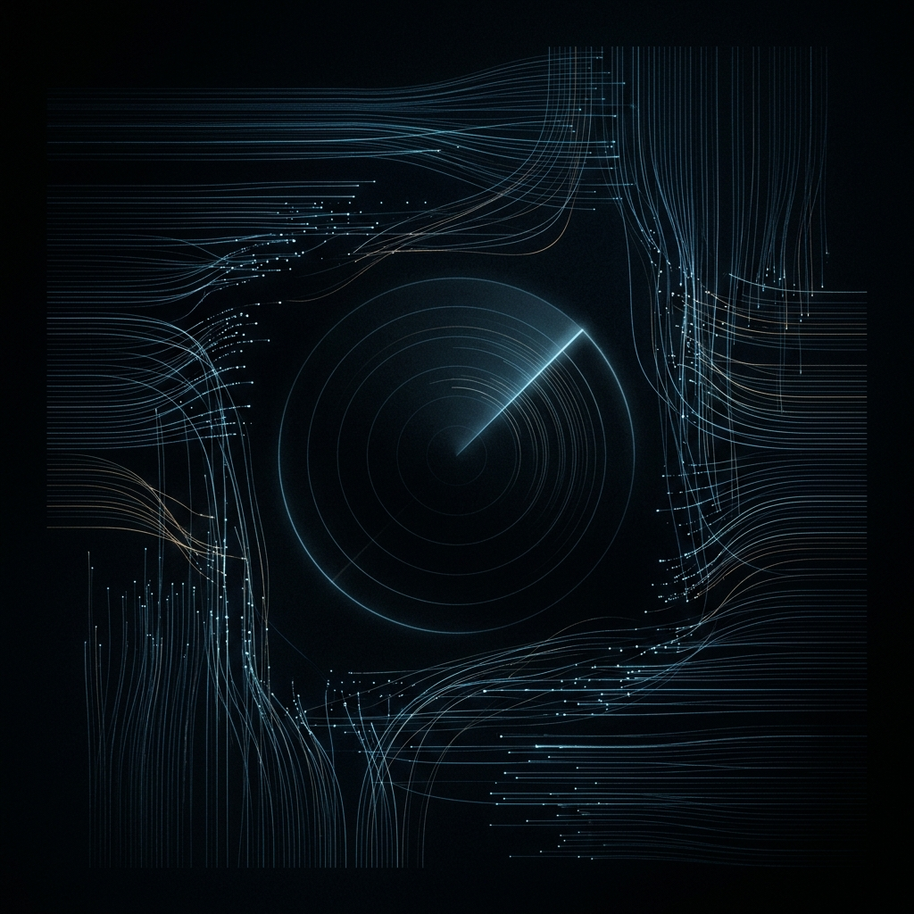
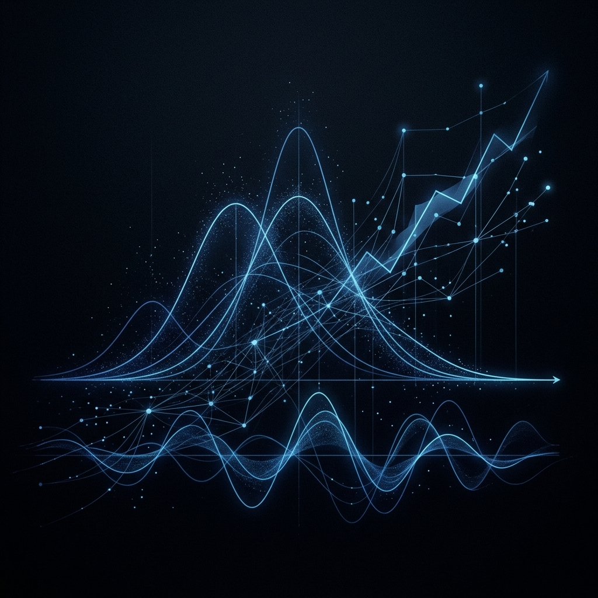
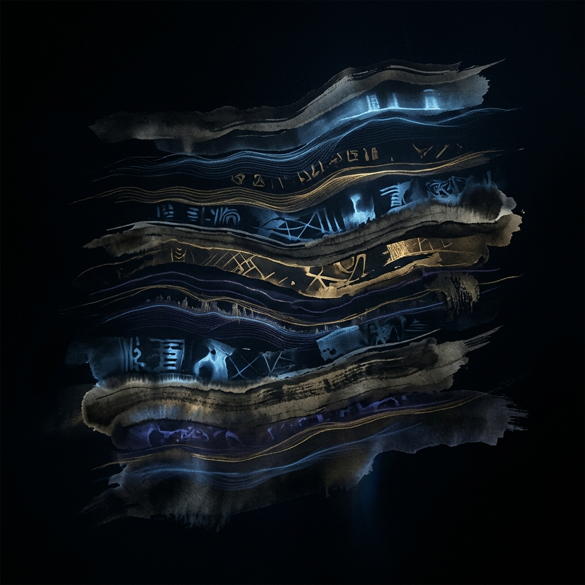

A inteligência política
mais avançada do Brasil.
IA especializada em campanha, reputação, narrativa e crise.
Para quem precisa enxergar antes, decidir antes e agir antes.
O ambiente político mudou.
A campanha moderna acontece simultaneamente em milhares de sinais, narrativas e movimentos invisíveis.
O problema não é falta de informação.
É visão incompleta.
Nenhuma equipe humana
consegue ler tudo.
Enquanto uma equipe analisa relatórios, a narrativa já mudou.
Enquanto uma crise é percebida, ela já ganhou velocidade.
Enquanto a resposta é aprovada, o dano já se consolidou.
O que o CORTEX faz.
Vê tudo.
Captura menções diretas e indiretas, sinais emergentes, velocidade de propagação e mudanças de comportamento coletivo.
Entende tudo.
Interpreta contexto, narrativa, intenção, impacto provável e risco reputacional.
Antecipa tudo.
Detecta anomalias, projeta cenários e recomenda ações estratégicas em tempo real.

Alerta preditivo.
"Ataque crescendo 380% em 90 minutos na zona sul de São Paulo."
A inteligência pensa junto com o eu estratégico do candidato.
A IA não substitui o estrategista.
Ela amplifica o estrategista.
Tom de voz
Posicionamento político
Limites éticos
Vulnerabilidades conhecidas
Identidade estratégica
Um super agente político especializado.
Não opina. Calcula.
Para quem é.
Candidatos
Campanhas
Partidos políticos

Estrategistas eleitorais
Estruturas de campanha

Equipes de comunicação política
Organizações que precisam compreender o ambiente político em tempo real, antecipar riscos, identificar oportunidades e tomar decisões com mais velocidade, precisão e contexto.
Entregas principais.

01Monitoramento político contínuo
Redes sociais, mídia digital, narrativas, ataques, menções e sinais emergentes.

02Análise preditiva
Projeção de impacto, escalada e risco reputacional.
 03
03
CORTEX CHAT
Converse com toda a inteligência da campanha em linguagem natural.
Clone cognitivo
Resposta alinhada ao tom, ética, vulnerabilidade e posicionamento do candidato.

05Memória política viva
Base contínua de padrões, histórico, comportamento regional e ciclos eleitorais.
Sala de guerra cognitiva
Uma camada de inteligência para apoiar decisões críticas durante toda a campanha.
Campanha eleitoral
como o Brasil nunca viu.
O CORTEX Eleitor transforma redes, mídia, comportamento e narrativa em inteligência política contínua para campanhas que precisam operar com precisão, velocidade e contexto.
Solicitar apresentação do CORTEX Eleitor